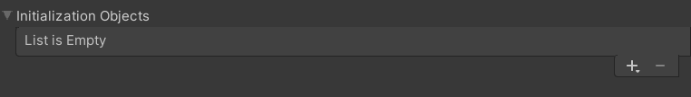

Addressables.InitializeAsync
API
AsyncOperationHandle<IResourceLocator> Addressables.InitializeAsync()
Returns
AsyncOperationHandle<IResourceLocator>: The AsyncOperationHandle for the InitializationOperation. This handle is automatically released after it completes.
Description
Initializing Addressables is a preliminary operation that has the responsibility of setting up the runtime data for Addressables. Addressables.InitializeAsync creates and executes an InitializationOperation operation. This operation does the following:
- Sets up the
ResourceManagerand theResourceLocators. - Loads the
RuntimeDatathat Addressables built in the Editor. - Executes
InitializationObjectsoperations that were added to the Addressables build. - Loads the
ContentCatalog. Optionally checks for updates to theContentCatalog. By default this check is turned on.
You can manually initialize Addressables, though it is not required, by calling Addressables.InitializeAsync().
If Addressables is not manually initialized, by default Addressables checks that initialization has occurred. If the initial call, such as a LoadAsset request, detects that initialization has not occured then an InitilizationOperation is kicked off automatically. The LoadAsset operation is chained behind the initialization operation and executes automatically afterwards.
By default Addressables sets up an ExceptionHandler in the ResourceManager for any exceptions that get logged. An exception handler can be setup manually by assigning a custom handler to UnityEngine.ResourceManagement.ResourceManager.ExceptionHandler. It is also possible to turn off runtime exception logging in the ResourceManager by unchecking the box Log Runtime Exceptions on the AddressableAssetSettingsObject.
//Manual initialization
IEnumerator Start()
{
AsyncOperationHandle<IResourceLocator> handle = Addressables.InitializeAsync();
yield return handle;
//...
}
Manual initialization can have performance benefits on your initial load. If you know you will use Addressables and don't want to incur the cost of initialization on your first Addressables operation, calling this manually can be a potential solution.
It may be preferable to manually initialize Addressables for debugging purposes. Lazy-initialization through a chain operation can muddle errors and make the root of the problem unclear. Manual initialization keeps that process separate which can help narrow down any issues.
The Result of this operation is an IResourceLocator. This object contains a list of Addressable keys and a method that can be used to gather the IResourceLocation(s) for a given key and asset type.
Access to the Result or Status is only available in a Completed callback. If a yield return is used instead, the Addressables will have auto-released the handle by the time access is attempted.
Full API documentation can be found here.
InitializationObjects
These are ScriptableObjects that can be added to an Addressable build to bootstrap some operation as part of Addressables initialization. For example, the CacheInitializationObject is provided by default. If one of these objects is created and added to the AddressableAssetSettings object, under Initialization Objects, it can be used to automatically setup Cache settings at runtime.

Custom Initialization objects can be implemented and created by creating a class and inheriting from ScriptableObject and implementing IObjectInitializationDataProvider.